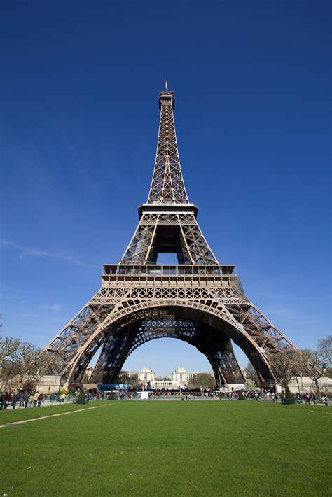

Destino Turistico: Torre Eiffel
La Torre Eiffel, uno de los monumentos mas famosos del mundo, esta ubicada en Paris, Francia. Inaugurada en 1889 para la Exposicion Universal, fue disenada por el ingeniero Gustave Eiffel. Con una altura de 330 metros, fue la estructura mas alta del mundo hasta 1930.
Este icono de la ciudad de Paris atrae a millones de visitantes cada ano, quienes pueden subir a sus plataformas para disfrutar de vistas panoramicas impresionantes de la ciudad. La torre es especialmente famosa por su iluminacion nocturna, que la hace brillar con miles de luces.
Principales atractivos:
- Las tres plataformas de la torre, accesibles por ascensor o escaleras.
- La vista panoramica de Paris, incluyendo lugares como el Arco del Triunfo, el Louvre y el Sena.
- El restaurante 58 Tour Eiffel, ubicado en el primer nivel de la torre.
- El Museo Gustave Eiffel, que explica la historia de la torre y su construccion.
- La iluminacion nocturna, que hace que la torre brille con miles de luces cada noche.
Instrucciones para visitar:
1. Llega a la Torre Eiffel en el centro de Paris, cerca del rio Sena.
2. Compra tus entradas en la taquilla o en linea para evitar largas colas.
3. Sube a la primera o segunda plataforma para disfrutar de las vistas, o llega hasta la cima para una vista completa de la ciudad.
4. Si deseas, cena en el restaurante 58 Tour Eiffel o disfruta de una bebida en el bar de la cima.
5. No olvides llevar una camara para capturar las impresionantes vistas de Paris.
